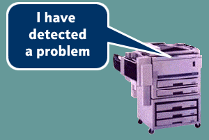

Network service providers have traditionally taken an all-embracing approach to Problem Management. That is to say, they manage the problem from the time it is reported, right through diagnosis and fixing, to confirming with the customer that the problem has been cleared.
To explore how things might have evolved by 2005, we take a look at other ways that problems could be managed [7] and draw on the styles of problem management adopted by other industries.
Scenarios
Scenarios fall into two categories:
- Open: (Third Party and PM Enabled),
- Service: (by Servicing or Replacing).
Replace
Why go through all the hassle of diagnosing the problem and fixing the root cause, when it is cost effective to replace a part, or the whole service, and start again?
Third Party
The vision describes a rich service industry dominated by SMEs looking for niche and specialised services. The specialisation and the competitive market place will encourage SME Service Providers to outsource non-core activities and so develop a Problem Management service market.
The standardisation of a set of common technology solutions and the move towards Open standards also enables uniformity between players, infrastructures. This helps the development of a niche Problem Management service player.
Niche market service providers may not find it cost effective to develop in-house Problem Management services. A market player offering Problem Management as a service in its own right will emerge.
PM-Enabled Service
The service itself is PM enabled.

Servicing
Minimising the PM required by pre-emptive servicing.
Players can adopt this approach to develop trust from the market-place for their service and allows them to differentiate the same service with tailored packages. Network players can adopt the same model with their suppliers, allowing them to check compatibility of their infrastructure.
The Shape of Problem Management
Taking seven generic capabilities that might be present in the networked service area, the perceived importance of each capability in the 'open' and 'service' worlds can be explored.
The aggregated results for each of the three Roles are shown in figure 7 which gives us 'the shape of problem management' in these worlds.
Plotting this in the scenario groups, with a balance for the likelihood of each scenario to exist, gives us a shape for the support systems required for problem management in 2005.
This shows the different
emphasis a different type of player will put on building capabilities
into their support systems.
|
|
|||||||||
|
|||||||||
|
|
|||||||||
Fig 7. The Shape of Support
For the Service Provider, Diagnosis and Routing are the most significant capability in the open world. This reflects the level of dependency the SP has on other roles. In the service world, the level of overall operational support is less, reflecting the drive to pre-empt or replace without diagnosis, and therefore the extent to which one capability dominates is not so clear cut, but Monitor appears to be the most significant.
For the network connector, Legacy is most significant with Monitor also important, in both the open world and the service world. This supports the hypothesis that the NC should concentrate on pre-emptive management of the network regardless of the services it transports; i.e. it should look after the business of network connectivity.
For the access connector, Monitor is most significant in both worlds, with Legacy running a close second. This reflects the synergy between the AC and NC roles, although the levels of operational support would seem to be less for the access connector and the relative significance is less pronounced.
This shows the different emphasis each type of player will put on building capabilities into their support systems.
© Copyright British Telecommunications plc 1999